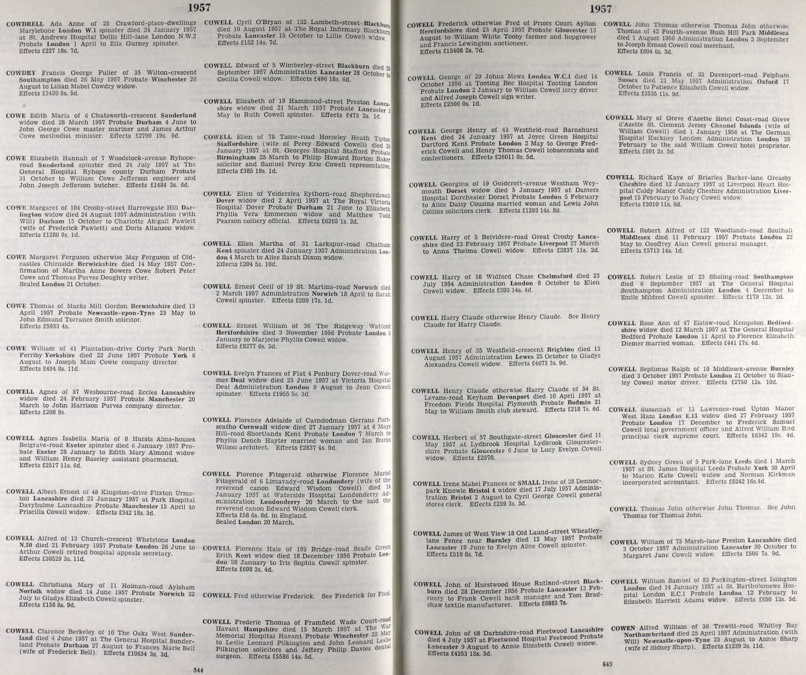
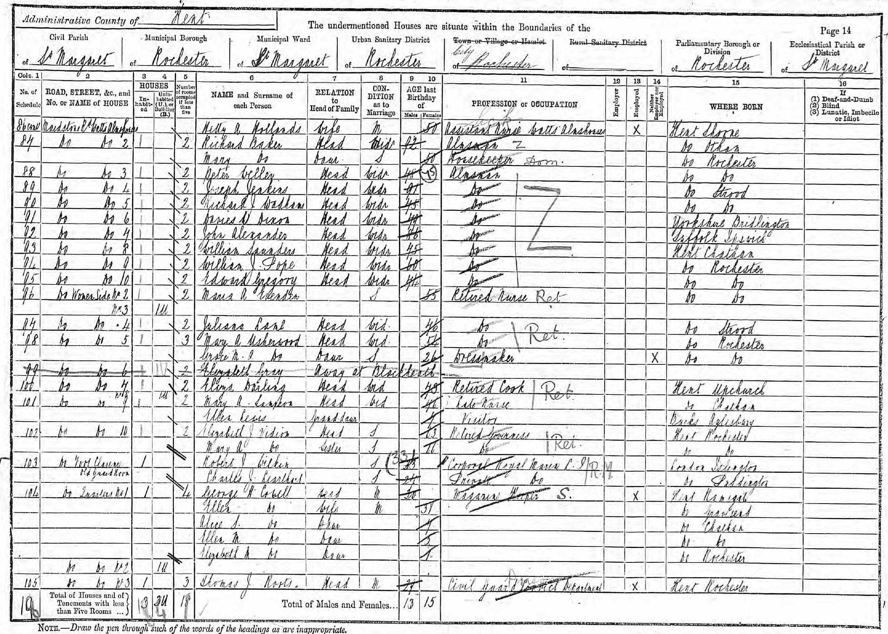
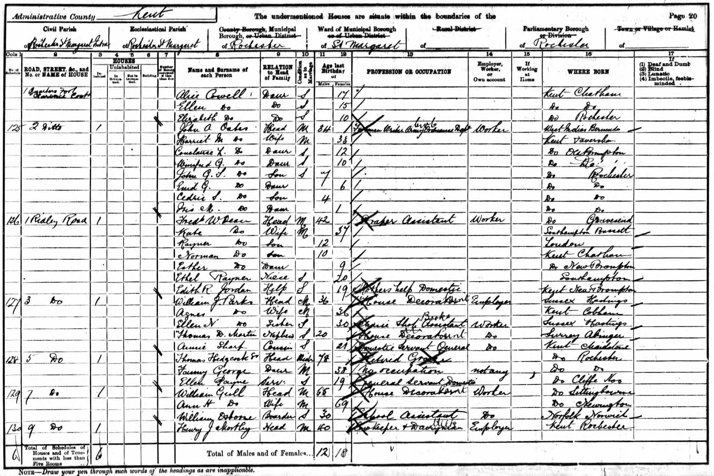
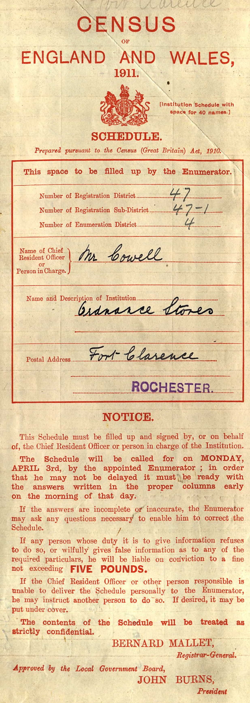
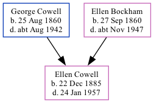

Ellen Martha Cowell 1885 - 1957
[ Home ] | [ Calendar ] | [ Surnames Index ] | [ Family History ]A domestic housemaid and domestic servant and the 2nd of 3 children of George Cowell (an army ordnance depot foreman) and Ellen Bockham, Ellen Cowell, the third cousin twice-removed on the mother's side of Nigel Horne, was born in Chatham, Kent, England on Dec 22, 18851,2,3,4 and baptized there at St Mary's Church on Feb 22, 1886.
Throughout her life, Ellen lived in several places: on Maidstone Road, Rochester, Kent, England on Apr 5, 18918; at Fort Clarence in Rochester on Mar 31, 19011 and on Apr 2, 19119; on Sunny Corner, Elm Grove Road, Cobham, Surrey, England on Sep 29, 19392; and on 31 Larkspur Road in Chatham in 1957.
She died on Jan 24, 1957 in Chatham5,6 and was buried there at Maidstone Road Cemetery on Jan 30, 19577.
Parents
- George Henry was born on Aug 25, 1860
- Ellen was born on Sep 27, 1860
Citations
- 1901 England, Wales & Scotland Census - Findmypast (was age 15 and the daughter of the head of the household)
- 1939 Register - Findmypast (was recorded at this address)
- England & Wales births 1837-2006 - Findmypast
- Kent Baptisms - Findmypast
- England & Wales Government Probate Death Index 1858-2019 - Findmypast
- England & Wales deaths 1837-2007 - Findmypast
- Kent Burials - Findmypast
- 1891 England, Wales & Scotland Census - Findmypast (was age 2 and the daughter of the head of the household)
- 1911 Census for England & Wales - Findmypast (was age 25 and the daughter of the head of the household)
Media
Ellen Cowell - probate

1891 UK Census

1901 UK Census

1911 UK Census - page 1

1911 UK Census page 2

England & Wales births 1837-2006 - BMD/B/1885/4/AZ/000126/365
England Births & Baptisms 1538-1975 - R_873098051
England Births & Baptisms 1538-1975 - R_935123532
England & Wales deaths 1837-2007 - BMD/D/1957/1/AZ/000220/087
1911 Census for England & Wales - GBC/1911/RG14/03888/0445/3
1939 Register Transcription - TNA-R39-1892-1892B-003-03
1901 England, Wales & Scotland Census Transcription - GBC-1901-0005415330
Kent Baptisms - PRS/MEDWAY/BAP/0105713
Kent Burials - KENT/FHS/BUR/CIVIL/012224
England & Wales Government Probate Death Index 1858-2019 - GBOR/GOVPROBATE/C/1957-1957/00044663
Family Tree
Generated by Ged2Site. Last updated on Jul 20, 2025